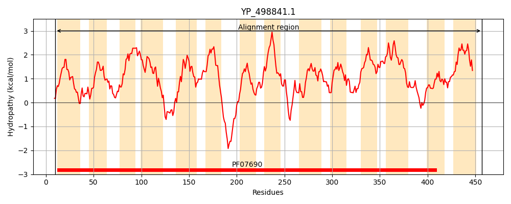
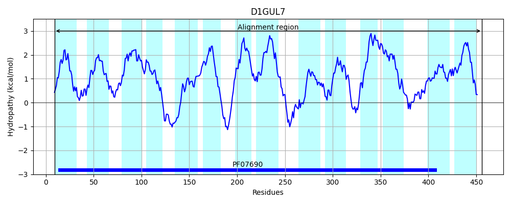
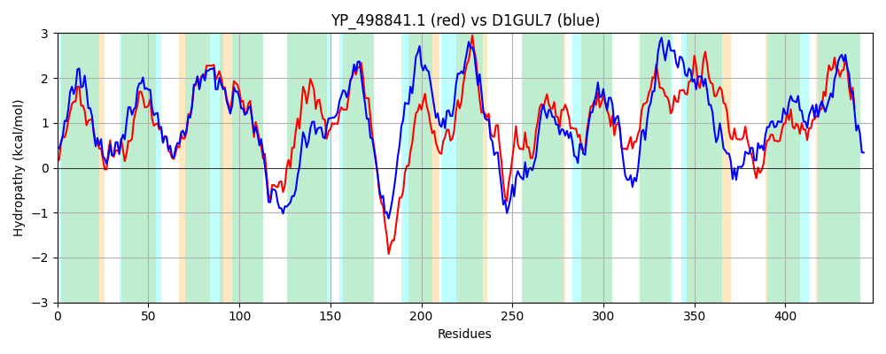

Hit Accession: D1GUL7
Hit TCID: 2.A.1.3.59
Hit Description: gnl|BL_ORD_ID|3013 gnl|TC-DB|D1GUL7|2.A.1.3.59 Putative transporter protein OS=Staphylococcus aureus (strain TW20 / 0582) GN=norC PE=4 SV=1
Mach Len: 448
e:0.000000
Query TMS Count : 14
Hit TMS Count: 14
TMS-Overlap Score: 13.600000
Predicted Substrates:CHEBI:35190;diterpene, CHEBI:23765;quinolone
BLAST Alignment:
Score: 880 , Bit scores: 343 bits, E-value: 2.6e-114, Alignment length: 448, Percentage identity: 37
Query: 10 SNIIIAIMLSALTYWLFAQSFINIGPLVGQTYQTSPAVLNLSISLTSFATGIFMVAAGDIADKIGQLRMTYMGLIISMFASLLLIISDITALLIIGRILQGLSAAILLPSTVGVLNNQFKGEHLRRAISYLMISTVGGIGLAGVIGGLIASNFGWQTNFIISIVIAFIAILLLKGTPEKVSQHSHRHPFDYKGMSIFAVMIGSFTLLLTQGFEQGWFSTFSIICLSIFIITTLIFIIIERRHEVPFIDFSVLRNRPFIGAFLNNFVLNSGLGVTVVFFIYAQTHLGLSAAQSGLVTLPYAIVAVAMIRLGEKATLRFGGKLMLIIGPLFPVIGITIISMTQLLASQYVIAVIIGFVICAIGNGLVATPGLTIAIFSMPNEKVGLATGLYKMSGTLGGSFGIALSTTVFSMLQLNYAPSVAATVTFIVSIVLMILGSLSAYMIIPKTVK 457
+ +I+ I+L +T+WLFAQS +N+ P + Q++ +++++SLT+ +G+F+V AG +ADKIG+++MT +GL++S+ S L+II+++ ALLI+GRI+QG+SAA ++PST+ ++ ++G +RA+SY I + GG G+ + GG +A+ GW+ FI SI++A +++LL+KGTPE S+ ++ H FD G+ + VM+ S +++T+G G+ S + ++I I+ IF+ +E++ + P IDF + N+P+ GA ++NF+LN G +V + Q LG +A Q+G +++ Y I+ + MIR+GEK + G K +++G +IGI +IS+ L YVI+ ++G++ +G G+ ATP AI + P +KVG+A+G+YKM+ +LGG+FG+A+S V++ + A + V++++ I+ ++ IP K
Sbjct: 9 NKLILGIVLGVITFWLFAQSLVNVVPNLQQSFGADMGTISIAVSLTALFSGMFVVGAGGLADKIGRVKMTNIGLLLSIIGSALIIITNLPALLILGRIIQGVSAACIMPSTLAIMKTYYEGAERQRALSYWSIGSWGGSGICSLFGGAVATTMGWRWIFIFSIIVAVLSMLLIKGTPETKSEVTNTHKFDVAGLIVLVVMLLSLNVVITKGAALGYTSLWFFGLIAIVIVAFFIFLNVEKKVDNPLIDFKLFENKPYTGATISNFLLNGVAGTLIVANTFVQQGLGYTALQAGYLSITYLIMVLLMIRVGEKLLQKMGSKRPMLLGTFIVIIGIALISLVFLPGIFYVISCVVGYLCFGLGLGIYATPSTDTAISNAPLDKVGVASGIYKMASSLGGAFGVAISGAVYAGAVAATSIHTGAMIALWVNVLMGIMAFIAILFAIPNDDK 456 | Protein Hydropathy Plots: |
|---|
|  |  |
Pairwise Alignment-Hydropathy Plot:
|
|---|
|  |